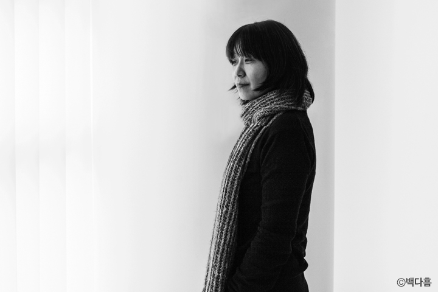

Han Kang
1970년 겨울 광주에서 태어났다. 1993년 『문학과사회』 겨울호에 시 「서울의 겨울」 외 네 편을 발표하고 이듬해 『서울신문』 신춘문예에 단편소설 「붉은 닻」이 당선되어 작품 활동을 시작했다. 소설집 『여수의 사랑』 『내 여자의 열매』 『노랑무늬영원』, 장편소설 『검은 사슴』 『그대의 차가운 손』 『채식주의자』 『바람이 분다, 가라』 『희랍어 시간』 『소년이 온다』 『흰』 『작별하지 않는다』, 시집 『서랍에 저녁을 넣어 두었다』 등을 출간했다. 오늘의 젊은 예술가상, 이상문학상, 동리문학상, 만해문학상, 황순원문학상, 김유정문학상, 김만중문학상, 대산문학상, 인터내셔널 부커상, 말라파르테 문학상, 산클레멘테 문학상, 메디치 외국문학상, 에밀 기메 아시아문학상 등을 수상했으며, 노르웨이 ‘미래 도서관’ 프로젝트 참여 작가로 선정되었다. 2024년 한국 최초 노벨문학상을 수상했다.
수상경력
- 2014년 만해문학상 (소년이 온다)
- 2015년 황순원문학상 (눈 한 송이가 녹는 동안)
- 2016년 맨 부커 국제상 (채식주의자)
- 2017년 말라파르테 문학상
- 2018년 김유정문학상 (작별)
- 2019년 인촌상 언론문화부문
- 2022년 제 2회 용아문화대상
- 2022년 제 13회 기만중문학상 소설부문 대상 (작별하지 않는다)
- 2023년 메디치 외국문학상 (작별하지 않는다)
- 2024년 삼성호암상 예술상
- 2024년 노벨 문학상
주요 작품들


관련 인터뷰

[한강 단독 인터뷰] 창밖은 고요합니다.
…고단한 날에도 한 문단이라도 읽고
잠들어야 마음이 편안해집니다
한강 작가의 노벨문학상 수상 소식을 예상한 사람은 많지 않았기에, 그리고 평소 대외활동이 많지 않던 한강 작가이기에 공식적인 인터뷰 기사를 만나는 것은 아마도 한참 후가 될 거라고 생각했다. 하지만 놀랍게도 노벨문학상 수상 다음날 한강 작가의 단독 인터뷰가 나왔다.
매일경제신문 김유태 기자의 허락을 얻어 한강 작가 단독 인터뷰를 게재한다. 김유태 기자는 개인 페이스북에 올린 한강 작가 인터뷰에 대한 후기를 통해 대학생때부터 앓던 한강 소설에 대한 열병과 이후 문학기자로서 가졌던 간절한 마음을 보여주기도 했는데, 오랜 시간 동안 한강 작가의 작품을 읽고, 연구하고, 좋은 질문을 던지기 위해 고민하고, 꾸준히 인터뷰를 요청해왔던 노력들이 한데 모여 만들어낸 소중한 인터뷰를 교보문고 독자들과 나누어 주었다.
◆ 2024 노벨상 ◆
노벨문학상을 수상한 한강 작가와의 인터뷰 질의서는 9월 29일 발송됐으며, 첫 번째 답변은 일주일 뒤인 6일 이메일로 도착했다. 추가 질의서를 보내고 10일 오전 두 번째 이메일이 도착했다. 메일을 열어 본 뒤 약 10시간이 지나 한강의 이름은 노벨문학상을 주관하는 스웨덴 한림원에서 호명됐다. 한강이 보내온 인터뷰 답변을 한강 작가의 목소리 그대로 전한다.
-지금 선생님이 위치하신 장소의 풍경이 궁금합니다. 창문 바깥의 풍경엔 어떤 사람들이 지나가고 탁자엔 어떤 사물이 있는지, 또 어떤 책이 펼쳐져 있는지.
▷지금은 일요일 새벽(6일)이라 창밖에 아무도 지나가지 않고 고요합니다. 최근까지 조해진 작가의 《빛과 멜로디》, 김애란 작가의 《이중 하나는 거짓말》을 읽었고 지금은 유디트 샬란스키의 《잃어버린 것들의 목록》과 장 자크 루소의 《루소의 식물학 강의》를 번갈아 읽고 있습니다. 사이사이 문예지들도 손 가는 대로 읽고요. 저는 쓰는 사람이기 전에 읽는 사람이라고 느낍니다. 고단한 날에도 한 문단이라도 읽고 잠들어야 마음이 편안해집니다.
포니정 혁신상 이어 노벨상… 수상은 부담스러운 일이지만 소설 쓰다 보면 느낄 틈 사라져
-에밀 기메 아시아 문학상, 메디치상에 이어 포니정 혁신상, 호암상을 연이어 받으셨습니다. ‘골방의 글쓰기’와 ‘세상의 찬사’ 사이에서 느끼시는 소감을 가볍게 말씀해주신다면.
▷무척 감사한 일입니다. 물론 부담도 됩니다. 하지만 다행인지 불행인지 소설을 쓰고 있다 보면 부담을 잊게 됩니다. 짧든 길든 소설 한 편을 완성하는 일이 늘 어렵다 보니 아마 부담이 들어올 자리가 남지 않는 것 같습니다.
-선생님 소설의 시원은 〈붉은 닻〉일 겁니다. 갯벌에 점점 잠기던 녹슨 붉은 닻들의 풍경은, 훗날 선생님 소설에 등장할 인물들을 전부 예고하는 하나의 선언적인 메타포로 남게 됐다고 개인적으로 생각합니다. 효용을 다하고 방치된 것들, 변색되다 침잠하는 가련한 생들에 대한 기억이랄까요.
▷대학을 졸업하고 ‘샘터’에 입사해 일하던 때 영종도로 직원 수련회를 갔는데, 해 질 무렵 썰물이 빠져나간 모래펄에 녹슨 닻들이 박혀 있는 것을 보고 그 풍경 앞에 서 있는 두 사람의 이야기를 소설로 쓰고 싶다고 생각했습니다. 첫 단편집 《여수의 사랑》에 묶인 소설들을 쓰던 시기에는 고단함에 관심이 있었습니다. 인간이 어떻게 삶을 버티고, 떠나기를 몰래 꿈꾸고, 저마다 홀로 피로와 시련을 감당해내는가 하는 것이 관심사였습니다.
나를 흔드는 의문들, 감정들 … 그것들을 문학이 다룬다면 읽는 사람들은 자신을 재발견
-〈채식주의자〉에 관한 질문은 너무나도 많이 받으셨으리라 생각합니다. 하지만 그 질문의 곁에서 질문드리건대 〈채식주의자〉는 〈내 여자의 열매〉에서 시작되어 《그대의 차가운 손》을 거친 뒤에 나온 소설이 아닐까 싶습니다. 이들은 아픔을 인식하거나 아픔을 드러내거나(드러내게 되거나) 아픔을 감추려는 사람들입니다.
▷저에게 소설들은 계속해서 이어지는 어떤 것입니다. 이야기가 이어진다기보다는 질문들이 이어지는데요. 어느 시기에든 골몰하는 질문이 있고, 그 질문을 진척시켜보는 방식으로 소설을 쓰게 됩니다.
-소설은 각 권, 각 작품이 하나의 시공간을 이루는 닫힌 공간이지만 선생님 소설은 상호 연결되는 ‘선형 공간’이란 생각도 들었습니다. 소설로 진입하실 때 옛 소설의 환영과 목소리가 틈입하는 순간이 잦으신지도 궁금합니다.
▷대답을 찾았다기보다는 그 질문의 끝에 다다랐다고 느낄 때 다음 질문으로 넘어가게 되고요. 그런데 말씀하신 대로 〈채식주의자〉는 〈내 여자의 열매〉를 변주한 소설이지만, 보통은 새로운 소설을 쓸 때 옛 소설을 염두에 두지는 않습니다. 써놓고 나서 예전의 소설과 연결되는 점이 있다는 것을 깨닫게 되는 경우는 있습니다. 예를 들어 《작별하지 않는다》를 다 쓰고 나서 첫 장편소설인 《검은 사슴》과 연결되어 있다는 것을 알게 되었습니다. 두 소설의 사이를 이루는 20여 년 동안 저는 자연인으로서 무척 많이 변했고 소설들도 마찬가지인데, 어떤 점은 변하지 않았고 그것이 저 자신의 핵심에 속하는 무엇일 수도 있겠다는 생각을 했습니다.
-선생님 소설은 그동안 변화해왔고 동시에 변화하고 있다고 생각합니다. 초기작과 달리 중기작(이 표현이 가능할지 모르겠습니다만)에선 역사성과 지역성이 두드러지는 선생님의 소설이 독자의 손에서 펼쳐지고 있으니까요. 변화의 중심에는 과거 선생님의 폴란드 바르샤바 체류 경험이 자리한다고 이해되는데, 당시 경험이 작품 세계의 변곡점이라고 스스로도 생각하고 계실지요.
▷도시 바르샤바에서 살았던 경험은 《흰》을 쓰는 데에 직접적인 영향을 주었습니다. 낯선 곳에서 가을과 겨울을 보내며 밤마다 《흰》을 조금씩 써간 시간이 참 좋았습니다. 한편 《소년이 온다》와 《작별하지 않는다》는 서로 연결되어 있는 짝과 같은 소설입니다. 실제로 《소년이 온다》의 에필로그와 《작별하지 않는다》의 프롤로그 격인 1부 1장은 연결되어 있고, 비슷한 기능을(현재와 과거, 소설과 현실을 잇는 다리 같은 것으로서) 하기를 바라며 썼습니다. 《작별하지 않는다》는 《소년이 온다》를 출간한 지 얼마 되지 않았을 때 꾼 꿈에서 시작된 소설입니다. 우듬지가 잘린 검은 통나무들이 수천, 수만 그루 들판에 심겨 있고, 그 나무들 뒤편마다 무덤이 있고, 멀리서부터 밀려온 바다가 무덤들을 쓸어 가는 꿈이었습니다. 어떤 꿈은 현실에서 경험한 것보다 강한 영향력을 가지기도 합니다. 이 두 소설을 모두 쓰는 데 약 9년이 걸렸는데, 중간에 꾼 그 꿈이 결국 이 두 편의 소설을 모두 끌어안고 있다는 생각이 들기도 합니다.
요즘 생명에 대한 생각 자주해 … 겨울 오기 전 새 작품 끝낼 계획
-한강의 소설을 결국 관통하는 주제는 ‘기억과 상처’일까요. 한때 〈몽고반점〉이 탐미주의 소설로 오독되기도 했는데 당시의 인물들과 최근작의 인물들은 사실 서로 ‘기억과 상처’라는 심리적인 그물로 연결돼 있습니다. ‘상처를 복원하고 그것을 문장으로 꿰어 독자들과 공유하는 것, 그렇게 집필된 소설을 독자가 읽는 것’은 어떤 힘을 가질까요. 결국 소설의 쓸모와 효용에 관한 질문이 되었는데, 이에 대한 견해를 여쭙고자 합니다.
▷저는 언제나 인간이 어떤 존재인지에 대해, 그리고 산다는 게 대체 무엇인지에 대해 자꾸 생각하는 사람이었던 것 같습니다. 그런 고민을 매번 다른 방식의 소설들로 다루고 싶어 했고요. 제 소설들을 읽어주신 분들과 그 암중모색을 나눌 수 있었던 것에 작은 의미가 있었기를 빕니다. 요즈음의 저는 생명 자체에 대한 생각을 자주 하고 있습니다. 생명을 품고 솟아나는 것들에 관심이 생깁니다. 다음 소설에서는 그런 생명의 감각을 다뤄보고 싶습니다.
-2016년 부커상 수상 즈음 인터뷰에서 “인간이란 주제는 제가 지금까지 소설을 쓴 동력”이라고 말씀하셨습니다. 인간에 대한 질문을 소설이란 형식으로 ‘거는’ 것은 작가에게 어떤 의미를 지닙니까. 선생님의 과거 말씀(작가의 말 등)을 되짚어보면 작가가 소설을 잉태하는 것이 아니라 소설이 작가를 잉태하는 것이란 생각도 드는데요.
▷생각하고 서성이고 고민하고 질문하고 길을 잃고 우회하고 되돌아오고…. 그런 일이 소설을 쓰는 일이라고 지금도 느낍니다. 그렇게 질문들을 다루는 방식으로 글을 쓰는 것이라고요.
어디든 읽는 이들 존재한다면 한국작품 만나는 일 자연스러워
-애써 희망하시는 일도 아니고, 또 답변하시기도 꺼려지시겠지만 엄연히 다가올 미래라고 생각하여 조심스럽게 질문드립니다. 저는 10년 안에 ‘소설가 한강’의 이름이 스웨덴에서 호명되리라고 확신하고 있습니다(10일 노벨문학상 수상). 이미 유럽은 한강의 이름을 연거푸 외치고 있고요. 한 나라의 문학이 언어의 장벽을 넘어 다른 나라에서 읽히고 너른 공감을 얻는 것은 작가와 독자, 즉 인류에게 어떤 의미를 형성한다고 보십니까.
▷문학이라는 것이 원래 연결의 힘을 가지고 있지요. 언어는 우리를 잇는 실이기도 하고요. 어디에든 읽는 사람들이 존재하는 한 한국 작가들의 작품들이 그 독자들을 만나게 되는 것은 자연스러운 과정이라고 생각합니다.
-2019년 노르웨이 ‘퓨처 라이브러리’ 행사에서 선생님께서 흰 강보로 묶어 땅에 묻은 책에 어떤 문장이 적혔는지를 궁금해하는 독자는 저만은 아닐 것입니다. 우리가 모두 사라진, 100년 뒤에 공개될 책을 노르웨이의 숲에 묻으셨어요. 100년 뒤의 독자를 생각하면 ‘쓸쓸하고 막막한’ 글인데, 100년 뒤의 독자를 감히 대신하여 여쭙습니다. 그 글이 어떤 글로 기억되기를 바라시는지요.
▷100년 뒤에 그 글이 어떻게 받아들여질지 사실은 잘 모르겠습니다. 그때 인류가 어떤 상황에 처해 있을지도 예측하기 어렵고요. 그 프로젝트에 참가한 후로 미래에 대한 관심이 더 생겼습니다. 인간은 변하는 존재이지만, 동시에 어떤 본질은 변하지 않는 존재이기도 하니까, 변하지 않은 마음들이 그 시공간에 있어서 제 글이 닿을 수 있다면 좋겠습니다.
-해외 잡지 《FRIEZE》에서 밝히시기를 앨리스 먼로, 한나 크랄, 체스와프 미워시, 페르난도 페소아, 한용운의 책을 언급하셨습니다. 선생님께 영향을 준 책들이지요. 아끼시는 작가나 작품을 꼽아주실 수 있을지요.
▷저에게 영향을 준 책들이라기보다는 《흰》을 쓰던 시기, 그러니까 바르샤바에 머물던 시기에 읽었던 책들의 목록으로 한정해서 썼던 짧은 에세이입니다. 벌써 10년이 흘러서 이젠 지금의 저와 아주 가깝게 느껴지는 책은 없네요. 사실 어떤 작가에게 영향을 받았다고 말하기가 참 어렵습니다. 어렸을 때부터 저에게 작가들은 일종의 집합체처럼 느껴졌습니다. 저마다 다른 방식으로 자신이 다루는 것들에 골몰해 있고, 뚫고 나가려 하는 사람들의 집합체요. 그들 전체의 이미지로부터 깊은 영향을, 때로 감동을 받습니다.
최근 썼던 글에 마음 머물러… 아직까지 마음 가는 인물은 《작별하지 않는다》 주인공
-선생님 본인의 소설에서 자꾸 돌아보게 되는, 애착이 가는 인물이 있다면 누구일까요. 과거 글에서 “내 몸에 머물렀던 소설은 가장 먼저 내 존재를 변화시킨다”고 하셨으니, 그 인물 모두를 아끼시겠지만 특별히 자꾸 꺼내어 보게 되는 인물은 누구일지 궁금합니다. 〈채식주의자〉의 영혜, 《그대의 차가운 손》의 L, 《검은 사슴》의 의선…. 자꾸만 부축하고 싶어지는 인물이 있다면.
▷언제나 가장 최근에 썼던 소설에 마음이 머무르기에, 《작별하지 않는다》의 세 주인공에게 지금은 마음이 갑니다. 정심과 인선과 경하에게요. 특히 정심은 소설을 쓰는 동안 아침에 눈뜰 때마다 생각했던 사람이라서 아직도 마음이 갑니다.
-소설을 쓰고 읽는 행위의 힘, 다시 말해 세상에서 소설의 역할은 무엇이라고 보시는지요. 거칠고 딱딱하기만 한 세상에서 소설은 어떤 힘을 가질까요.
▷우리는 일상 속에서 정말 깊은 진실을 보거나 보여주기 쉽지 않잖아요. 친구와 밥을 먹다가 ‘나는 요즘 산다는 게 뭔지 생각하고 있어’라고 고백하기는 어려운 것처럼… 꺼내기 쉽지 않지만 표면 아래에서 우리를 흔드는 중요한 감정들, 깊은 의문들, 감각들을 문학이 다루면, 그걸 읽는 사람들은 문득 자신 안에 있던 그것들을 다시 발견하게 됩니다. 읽고 있는 소설 속 사람이 되어보며 자신으로부터 벗어났다가 다시 돌아오는 순간을 반복하면 자아에 틈이 벌어지면서 투명하게 자신을 직시하는 경험도 하게 되고요. 그렇게 소설은 여분의 것이 아니라고, 우리에게 필요한 것, 우리를 연결하는 실 같은 것이라고 생각합니다.
-앞서 다음 소설의 주제로 ‘생명의 감각’을 언급하셨습니다. 현재 집필 중인 다음 소설에 대해 귀띔이 가능할까요.
▷원래는 여름까지 마무리하려고 했던 소설이 있는데 여러 가지 사정으로 미뤄졌습니다. 가을이 아직 남았으니 가을 안에 완성해보고 싶지만, 아마도 겨울로 넘어가게 될 것 같습니다. 소설을 끝내는 시점을 스스로 예측하는 것은 언제나 어렵고, 대체로 늘 틀리는 편입니다.
―마지막 질문입니다. 어쩌면 이 질문을 드리기 위한 인터뷰였는지도 모르겠습니다. 집필하시는 순간, 선생님이 보시는 ‘골방의 풍경’이 궁금합니다. 집필 공간으로서의 물리적 풍경이 아니라 ‘쓰고 있는 순간에 선생님께서 보시는 상태의 정신적인 풍경’이 궁금합니다. 누가 지나가고, 누가 말을 거는지, 또 어떤 일이 벌어지고 있는지.
▷심장 속, 아주 작은 불꽃이 타고 있는 곳. 전류와 비슷한 생명의 감각이 솟아나는 곳.